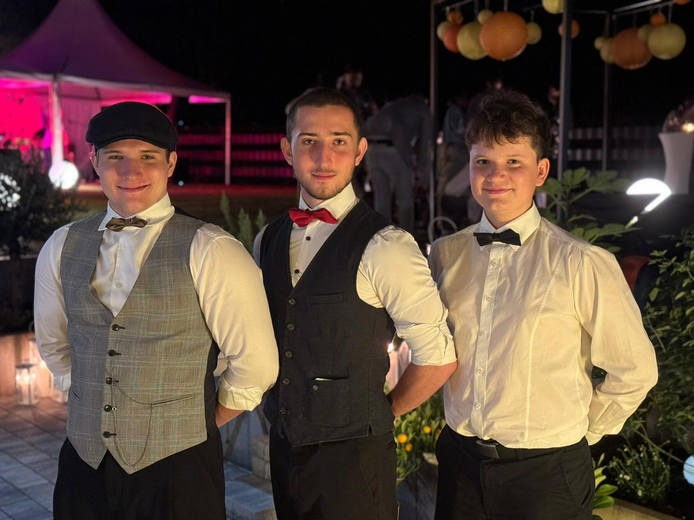
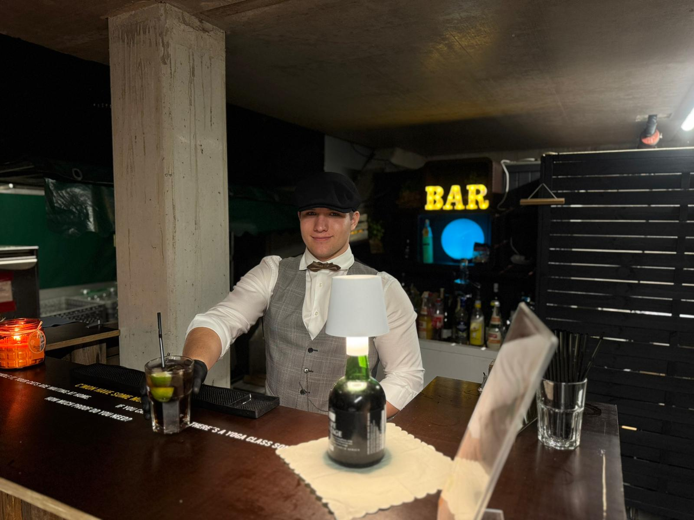
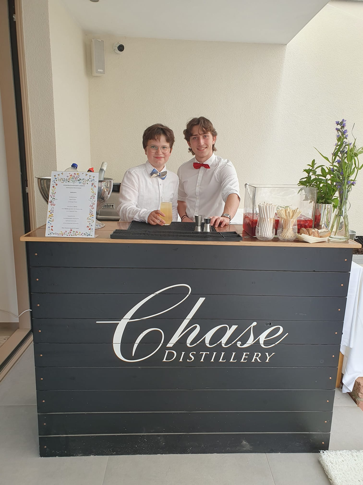
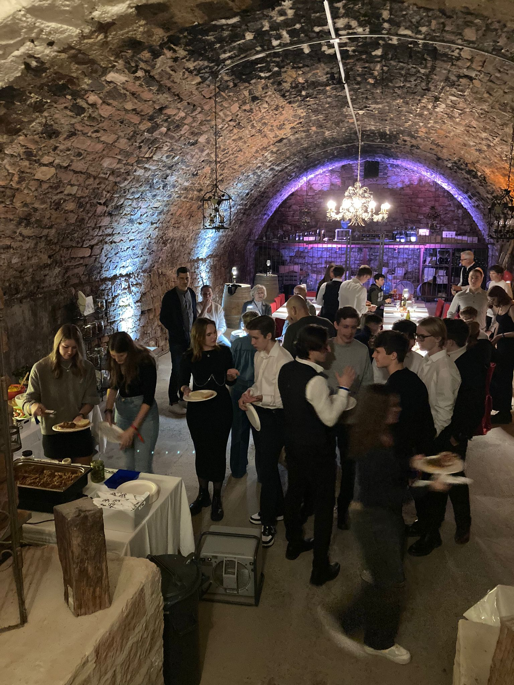
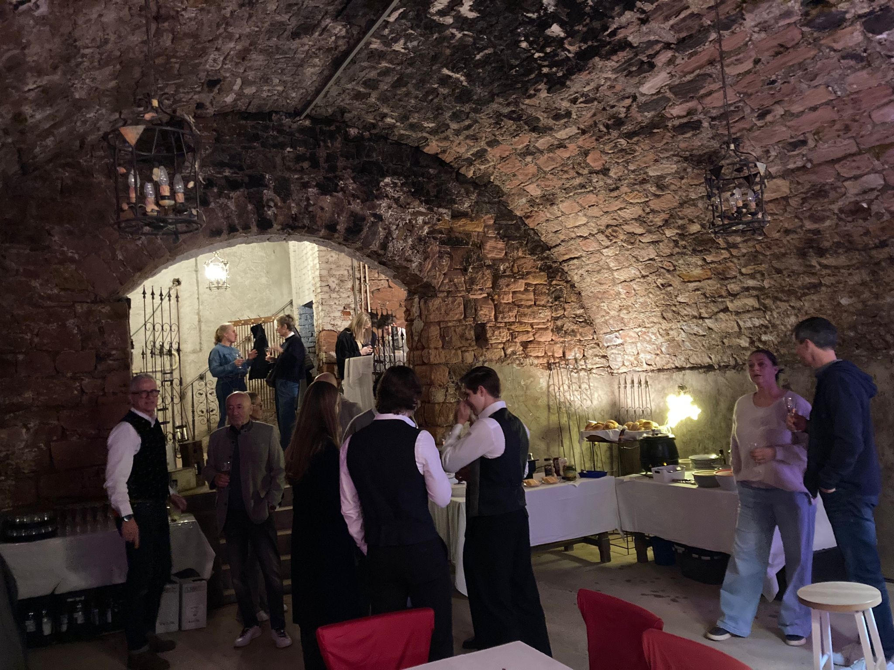
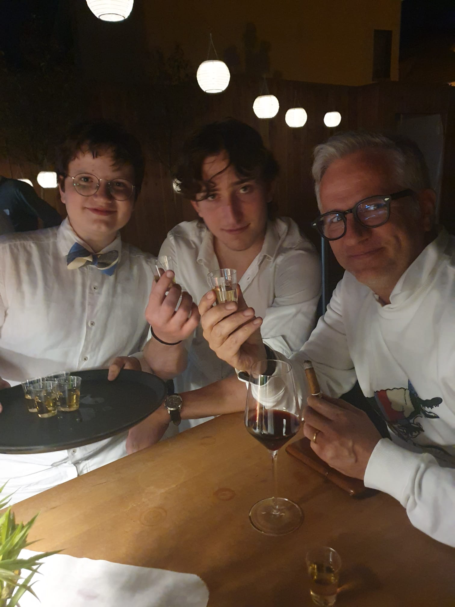

Euer Boutique-Barteam für Partys, Pop-Ups & Corporate Events
Wir bringen einen Hauch von Golden-Age-Glanz und handgemixte Signature Drinks zu euren Gästen. Von der
Konzeption bis zum letzten Glas schaffen wir ein Erlebnis, das in Erinnerung bleibt.
Wir sind drei Freunde mit Liebe zu maßgeschneiderten Cocktailkonzepten. Inspiriert von unseren
ikonischen Fliegen, kombinieren wir elegante Präsentation mit einem Augenzwinkern.
Premium Zutaten
Hausgemachte Infusionen, saisonale Botanicals und ausgewählte Spirituosen.
Individueller-Service
Setup, Personal, Glasware – ihr erzählt uns, was ihr braucht und wir kümmern uns um den Rest.
Signature Erlebnis
Individuelle Menüs und Storytelling für Marken, Hochzeiten und private Feiern.
Scroll
Was unsere Gastgeber sagen
“Fantastische Drinks und super Team!” – Lisa, Sommerfest 2024
“Unkomplizierte Planung, stilvoller Auftritt, alle waren begeistert.” – Jan,
Geburtstagsfeier
“Professionell von A bis Z – sehr zu empfehlen!” – Marie, Corporate Event
“Liebe zum Detail und sensationeller Geschmack.” – Tom, Hochzeit
“So macht Feiern Spaß – wir buchen wieder!” – Karo, Gartenparty
Über uns
Wir sind ein junges, eingespieltes Cocktail-Kollektiv aus Obernburg am Main und agieren im
Kreis Aschaffenburg/Miltenberg. Mit Sinn für Details, hochwertigen Zutaten und einem
freundlichen Auftreten gestalten wir Barerlebnisse, die im Gedächtnis bleiben.
Handwerk & Gastfreundschaft
Ob private Feier, Hochzeit oder Firmenevent – wir bringen eine stilvolle mobile Bar, durchdachte
Abläufe und Signature-Drinks mit. Von der Planung bis zum letzten Glas kümmern wir uns darum, dass
ihr euch entspannt zurücklehnen könnt.
Auf Wunsch entwickeln wir individuelle Menüs, passende Gläser und
Garnishes – immer mit Fokus auf Qualität und Atmosphäre.


Events
Einblicke in vergangene Partys, Pop-Ups und Einsätze.




Aktuell angesagte Cocktails
Wir kuratieren kontinuierlich Drinks, die eure Gäste begeistern – von neu interpretierten
Klassikern bis zu progressiven Kreationen mit lokalen Zutaten.
Classic
Whiskey Sour
Zeitloser Sauer: ausgewogen zwischen Zitrone und Bourbon.
Bourbon Whiskey
Zitronensaft
Zuckersirup
Eiweiß (optional)
Angostura
Classic
Espresso Martini
Kräftig und cremig mit frisch gezapftem Espresso.
Vodka
Espresso
Kaffeelikör
Zuckersirup
Classic
French 75
Fein perlend: Gin, Zitrone und Champagner.
Gin
Zitronensaft
Zuckersirup
Champagner
Classic
Negroni
Bitter-süßer Ikone mit Tiefe und Kante.
Gin
Campari
Roter Vermouth
Orangenzeste
Classic
Mojito Royal
Frische Minze, Limette und ein spritziger Royal-Touch.
Rum
Limette
Minze
Rohrzucker
Champagner/Sekt
Spritz
Aperol Spritz
Der Klassiker in 3-2-1: fruchtig-bitter und herrlich spritzig.
Prosecco
Aperol
Soda
Orange
Highball
Wild Berry Lillet
Leicht, beerig und floral mit prickelndem Wild-Berry-Tonic.
Lillet Rosé
Wild Berry Tonic
Limette
Beeren
Highball
Gin & Tonic
Knackig, erfrischend und vielseitig: der Crowd-Pleaser.
Gin
Tonic Water
Zeste oder Zitrus
Spritz
Limoncello Spritz
Italienische Sonne im Glas: Limoncello, Prosecco und Soda.
Pallini Limoncello
Prosecco
Soda
Zitrone
Highball
Blue Lagoon
Frisch und zitrisch mit ikonischer blauer Farbe.
Vodka
Blue Curaçao
Zitronensaft
Zitronenlimonade
Zero Proof
Aperol-Style Spritz
Orange-bitter und prickelnd – ganz ohne Alkohol.
Alkoholfreier Aperitif
Alkoholfreier Prickler
Soda
Orange
Zero Proof
Limoncello-Style Spritz
Zitronig-spritzig mit alkoholfreiem Prickler.
Zitronensirup
Zitronensaft
Alkoholfreier Prickler
Soda
Zero Proof
Blue Coconut
Tropisch-cremig mit Kokos, Ananas und blauer Note.
Kokoscreme
Ananassaft
Blue Curaçao Sirup
Limettensaft
Alkoholfreie Cocktails
Vollwertige Drinks ohne Alkohol – aromatisch, ausgewogen und ebenso liebevoll präsentiert.
Zero Proof
Virgin Mojito
Minze, Limette, Zucker und Soda – erfrischend pur.
Limette
Minze
Rohrzucker
Soda
Zero Proof
Nojito Royale
Der Virgin Mojito mit edler Prickel-Note.
Limette
Minze
Rohrzucker
Alkoholfreier Prickler
Zero Proof
Champagner‑Mocktail
Festlich, trocken und spritzig – ganz ohne Alkohol.
Alkoholfreier Schaumwein
Zitronenzeste
Verjus oder Traube
Zero Proof
Berry Bliss
Beerenfrucht, Zitrus und feine Herbe im Gleichgewicht.
Beerenpüree
Zitrone
Kräutersirup
Soda
Unsere Auswahl
Stellt euch euer Wunschmenü zusammen – kombiniert Klassiker, Crowd-Pleaser und unsere eigenen
Kompositionen. Wir passen jede Karte an euren Anlass an.
Whiskey Sour
Bourbon, Zitrone und Sirup – klassisch balanciert, auf Wunsch mit cremigem Schaum.
Elegant, zeitlos
Espresso Martini
Wachmacher mit Stil: Vodka, Kaffeelikör und frischer Espresso.
Late‑Night Favorite
French 75
Spritziger Klassiker mit Gin, Zitrone und Champagner.
Feierlich & frisch
Negroni
Ikonisch bitter‑süß mit Tiefe – perfekt zum Anstoßen.
Stark & charaktervoll
Mojito Royal
Minzig‑frisch mit Limette und prickelndem Champagner‑Finish.
Sommerlich & spritzig
Virgin Mojito
Alle Frische, kein Alkohol – Limette, Minze und Soda.
Zero Proof
Nojito Royale
Virgin Mojito mit edler Prickel‑Note.
Zero Proof
Champagner‑Mocktail
Trocken, festlich und elegant mit alkoholfreiem Schaumwein.
Zero Proof
Berry Bliss
Beerenfrucht, Zitrus und Kräuter – ausgewogen und erfrischend.
Zero Proof
Aperol Spritz
3-2-1: Prosecco, Aperol, Soda – fruchtig-bitter und spritzig.
Spritz
Wild Berry Lillet
Beerig-floral mit Lillet Rosé und Wild-Berry-Tonic.
Highball
Campari Soda
Bitterfrisch und leicht: Campari auf Eis, aufgefüllt mit Soda.
Low-ABV
Vermouth Tonic
Weißer Vermouth mit Tonic und Zeste: elegant und leicht.
Low-ABV
Gin & Tonic
Klar, frisch und vielseitig – ein moderner Klassiker.
Highball
Banana Joe
Tropisch und rund: Rum, Bananenlikör, Limette und Ananas.
Brasilianischer Klassiker mit Cachaça, Limette und Zucker.
Classic
Aperol-Style Spritz (Zero)
Der orange-bittere Spritz als alkoholfreie Alternative.
Zero Proof
Limoncello-Style Spritz (Zero)
Zitronig-frisch, perlend und alkoholfrei.
Zero Proof
Blue Coconut (Zero)
Kokos & Ananas mit blauer Note – tropisch und cremig.
Zero Proof
Zutatenrechner
Plant eure Veranstaltung mit Leichtigkeit: Wählt einen Drink und gebt die Anzahl der Drinks an. Unser
Rechner zeigt euch die benötigten Zutatenmengen.
Benötigte Zutaten
Wählt oben einen Cocktail und klickt auf „Berechnen“.
Häufig gestellte Fragen
Ein paar schnelle Antworten. Wenn noch etwas offen ist, meldet euch jederzeit – wir beraten gern.
Welche Leistungen bringt ihr mit?
Bar-Setup, professionelle Ausstattung, Eis, Glasware, Zutaten und Personal. Optional übernehmen wir
auch Konzepterstellung, Deko und passende Musikempfehlungen.
Könnt ihr alkoholfreie Optionen anbieten?
Ja, wir haben eine Zero-Proof-Auswahl mit eigenständigen, aromatischen Drinks – nicht nur
„ohne Alkohol“, sondern mit Charakter.
Wie kalkuliert ihr die Mengen?
Unser Rechner gibt erste Richtwerte. Erfahrungsgemäß planen wir mit drei bis fünf Drinks
pro Person, je nach Eventdauer.
In welchem Gebiet seid ihr unterwegs?
Wir kommen aus Obernburg am Main und sind mobil im Kreis Aschaffenburg/Miltenberg unterwegs. Teilt uns
Datum, Ort und Gästezahl mit – wir prüfen Verfügbarkeit und erstellen ein Angebot.
Lasst uns gemeinsam anstoßen
Erzählt uns von eurer Veranstaltung, wir melden uns mit einem maßgeschneiderten Angebot. Auf Wunsch
unterstützen wir auch bei Mobiliar, DJs und Konzeptentwicklung.